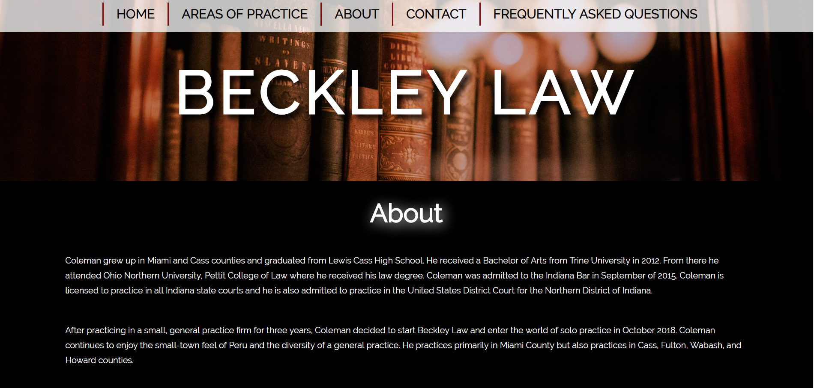
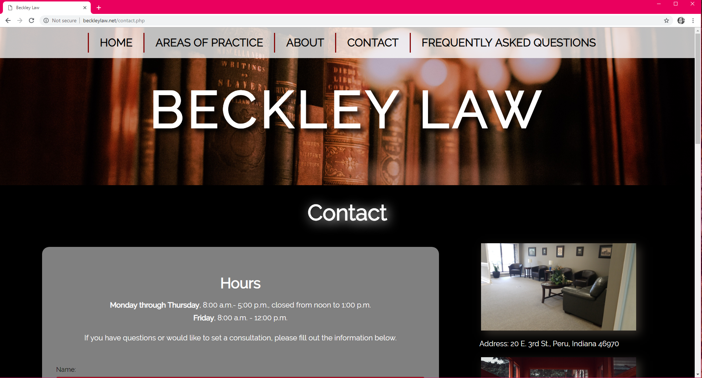
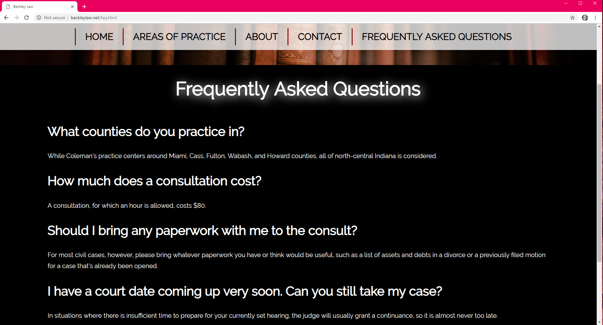
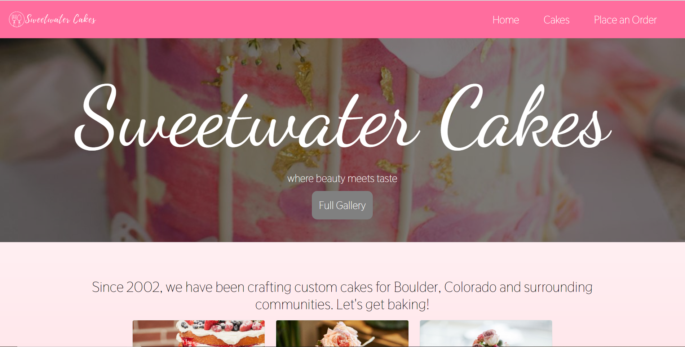
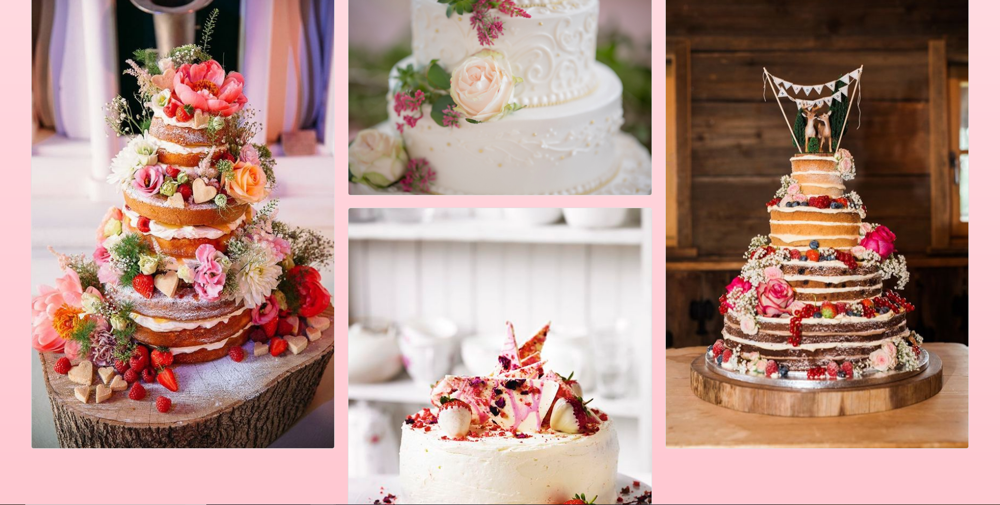
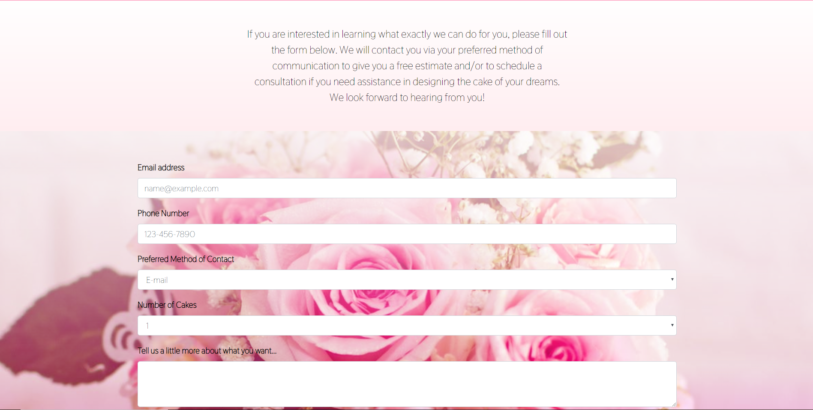
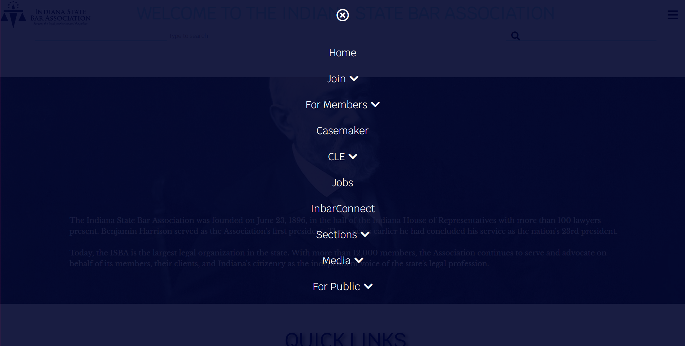

I use HTML, CSS, and Javascript to create mobile-first and fully responsive websites. My passion is giving the user a stress-free and fun experience, and I use fundamental SEO standards, unobtrusive JavaScript, and the latests (and most supported!) CSS capabilities to get there.
Web development technologies/frameworks/languages I use:
|| SASS ||
|| Bootstrap ||
|| jQuery ||
|| Git ||
|| XAMPP ||
|| SQL ||
×
Beckley Law
This was the first website that I built. The attorney I created it for has since left the private practice of law, so the website is serving as just a recommendation page. This was my first encounter with a PHP contact form, Javascript image slideshows, and mobile-first development. Click the arrows to see screenshots of the site.


This was my first time using PHP to build a contact form.
At the bottom of the page I included a map.

Play the video to see responsiveness.
×
Sample Beef Farm site
This is a sample small-business beef farm website. The purpose here was to integrate a Facebook feed, configure XAMPP to test the contact form, build a hamburger menu for mobile view, and integrate a brand logo.
Contact page.
About page.
Play the video to see responsiveness.
×
Sample Cake Decorating site

The purpose of this sample business website was to explore Bootstrap and to customize the CSS so that the site wasn't too "bootstrappy".

Bootstrap gallery of images.

An order form.
Play the video to see responsiveness.
×
Redesign of the Indiana State Bar website
I got the inspiration to redesign the Indiana State Bar's website when I had to visit it in the course of my job, and noticed how outdated and unresponsive it is. This is my take on a good makeover, while still retaining the basic set up of the site (The current site has changed slightly since I created my version, and between the time of my redesign and the time these screenshots were taken). My objectives here included incorporating SASS, parallax scrolling, jQuery, and beautiful Javascript effects.
My take on it
For my version, I used parallax scroll with both "background-position: attached;" in some places and jQuery in others. I used some JavaScriptfade-in effects and included a searchbar beneath the logo and menu button.

For the navigation menu, I at first tried a more traditional approach with dropdown links that would appear on hover. However, the navigation menu is so content-heavy that a fullpage menu, like I had for mobile, was actually a better option for the desktop version as well.
Play the video to see the redesign in action.
PORTFOLIO
Check out some of my projects...
ABOUT
For the past two years I have worked as a paralegal at a general practice law office. Over the course of time I discovered and became addicted to the rush that comes from deploying code to find solutions in the web development arena. When I'm not coding, you can find me in the kitchen cooking up something tasty, at the shooting range, or at the piano, where it's a good thing I can play C# without knowing how to write it.
Contact
Like what you see? Looking to hire a junior front-end web dev?